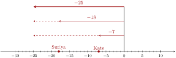
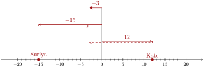

There are special things to consider when adding, subtracting, multiplying, dividing, and raising to powers, when negative numbers are involved. This section reviews those arithmetic operations with negative numbers.
FigureA.1.1.Alternative Video Lesson
SubsectionA.1.1Signed Numbers
Is it valid to subtract a large number from a smaller one? It may be hard to imagine what it would mean physically to subtract \(3\) cars from your garage if you only have \(1\) car there in there in the first place. But mathematics gives meaning to expressions like \(1-3\) using signed numbers.
You’ve probably seen signed numbers used to describe the temperature of very cold things. Most people on Earth use the Celsius scale for temperature. If you’re not familiar with the Celsius temperature scale, think about these examples:
FigureA.1.2.Number line with interesting Celsius temperatures
Figure 2 uses a number line to illustrate these positive and negative numbers. A number line is a useful device for visualizing how numbers relate to each other and combine with each other. Values to the right of \(0\) are called positive numbers and values to the left of \(0\) are called negative numbers.
WarningA.1.3.Subtraction Sign versus Negative Sign.
Unfortunately, the symbol we use for subtraction looks just like the symbol we use for marking a negative number. We must be able to identify when a “minus” sign means to subtract and when it means to negate. Here are some examples.
\(-13\) has one negative sign and no subtraction sign.
\(20-13\) has no negative signs and one subtraction sign.
\(-20-13\) has a negative sign and then a subtraction sign.
\((-20)(-13)\) has two negative signs and no subtraction sign.
CheckpointA.1.4.Identify “Minus” Signs.
In each expression, how many negative signs and subtraction signs are there?
(a)
\(1-9\) has negative signs and subtraction signs.
Explanation.
\(1-9\) has zero negative signs and one subtraction sign.
(b)
\(-12+(-50)\) has negative signs and subtraction signs.
Explanation.
\(-12+(-50)\) has two negative signs and zero subtraction signs.
(c)
\(\dfrac{-13-(-15)-17}{23-4}\) has negative signs and subtraction signs.
Explanation.
\(\dfrac{-13-(-15)-17}{23-4}\) has two negative signs and three subtraction signs.
SubsectionA.1.2Adding
To adding two numbers with the same sign you can (at first) ignore their signs, and add the two numbers as if they were positive. Then make sure your result is either positive or negative, depending on what the sign was.
ExampleA.1.5.Add Two Negative Numbers.
If you needed to add \(-18\) and \(-7\text{,}\) note that both are negative. Maybe you have this expression in front of you:
\begin{equation*}
-18+-7
\end{equation*}
That “plus minus” is awkward, and in this book you are more likely to see this expression:
\begin{equation*}
-18+(-7)
\end{equation*}
with extra parentheses. Since both terms are negative, we can add \(18\) and \(7\) to get \(25\) but realize that our final result should be negative. So our result is \(-25\text{:}\)
\begin{equation*}
-18+(-7)=-25
\end{equation*}
This approach works because adding numbers is like having two people tugging on a rope, with strength indicated by each number. In Example 5 we have two people pulling to the left, one with strength \(18\) and the other with strength \(7\text{.}\) Their forces combine to pull left with strength \(25\text{,}\) giving us our total of \(-25\text{,}\) as illustrated in Figure 6.
If we are adding two numbers that have opposite signs, then the two people are tugging the rope in opposing directions. If either of them is using more strength than the other, then overall there will be a net pull in the stronger person’s direction. And the overall pull on the rope will be the difference of the two strengths. This is illustrated in Figure 7.

FigureA.1.6.Working together

FigureA.1.7.Working in opposition
ExampleA.1.8.Adding One Number of Each Sign.
Here are four examples of addition where one number is positive and the other is negative.
\(-15+12\)
We have one number of each sign, with sizes \(15\) and \(12\text{.}\) Their difference is \(3\text{.}\) But of the two numbers, the negative number is stronger. So the result from adding these is also negative: \(-3\text{.}\)
\(200+(-100)\)
We have one number of each sign, with sizes \(200\) and \(100\text{.}\) Their difference is \(100\text{.}\) But of the two numbers, the positive number is stronger. So the result from adding these is also positive: \(100\text{.}\)
\(12.8+(-20)\)
We have one number of each sign, with sizes \(12.8\) and \(20\text{.}\) Their difference is \(7.2\text{.}\) But of the two numbers, the negative number is stronger. So the result from adding these is also negative: \(-7.2\text{.}\)
\(-87.3+87.3\)
We have one number of each sign, both with size \(87.3\text{.}\) The opposing forces cancel each other, leaving a result of \(0\text{.}\)
CheckpointA.1.9.Addition with Negative Numbers.
Practice adding when at least one negative number is involved. The expectation is that you can do these tasks without a calculator.
(a)
Add \(-1+9\text{.}\)
Explanation.
The two numbers have opposite sign, so we subtract \(9-1=8\text{.}\) Of the two numbers being added, the positive is larger, so the result should positive as well: \(8\text{.}\)
(b)
Add \(-12+(-98)\text{.}\)
Explanation.
The two numbers are both negative, so we can add \(12+98=110\text{,}\) and take the negative of that as the answer: \(-110\text{.}\)
(c)
Add \(100+(-123)\text{.}\)
Explanation.
The two numbers have opposite sign, so we subtract \(123-100=23\text{.}\) Of the two numbers being added, the negative is larger, so the result should be negative: \(-23\text{.}\)
(d)
Find the sum \(-2.1+(-2.1)\text{.}\)
Explanation.
The two numbers are both negative, so we can add \(2.1+2.1=4.2\text{,}\) and take the negative of that as the answer: \(-4.2\text{.}\)
(e)
Find the sum \(-34.67+81.53\text{.}\)
Explanation.
The two numbers have opposite sign, so we can subtract \(81.53-34.67=46.86\text{.}\) Of the two numbers being added, the positive is larger, so the result should be positive: \(46.86\text{.}\)
SubsectionA.1.3Subtracting
Subtracting a small positive number from a larger number, such as \(18-5\text{,}\) is a skill you are familiar with. Subtraction can also be done where a small positive number subtracts a larger number, or where one or both numbers are negative. Subtracting with negative numbers can cause confusion, and to avoid that confusion, it may help to think of subtraction as adding the opposite number.
Original
Adding the Opposite
Subtracting a larger positive number:
\(12-30\)
\(12+(-30)\)
Subtracting from a negative number:
\(-8.1-17\)
\(-8.1+(-17)\)
Subtracting a negative number:
\(42-(-23)\)
\(42+23\)
This strategy will reduce subtraction to addition. So if you are already comfortable adding positive and negative numbers, subtraction becomes just as familiar. These examples show how it is done:
CheckpointA.1.10.Subtraction with Negative Numbers.
Practice subtracting when at least one negative number is involved. The expectation is that you can do these tasks without a calculator.
(a)
Subtract \(-1\) from \(9\text{.}\)
Explanation.
After writing this as \(9-(-1)\text{,}\) we can change to \(9+1\) and get \(10\text{.}\)
(b)
Subtract \(32-50\text{.}\)
Explanation.
We can change this to \(32+(-50)\text{.}\) Two numbers are added, and the larger one is negative. So we find the difference \(50-32=18\text{,}\) but the final result must be negative: \(-18\text{.}\)
(c)
Subtract \(108-(-108)\text{.}\)
Explanation.
We can rewrite this as \(108+108\) and get \(216\text{.}\)
(d)
Find the difference \(-5.9-(-3.1)\text{.}\)
Explanation.
We can rewrite this as \(-5.9+3.1\text{.}\) Now it is the sum of two numbers of opposite sign, so we find the difference \(5.9-3.1=2.8\text{.}\) We were adding two numbers where the larger one was negative. So the final result should also be negative: \(-2.8\text{.}\)
(e)
Find the difference \(-12.04-17.2\text{.}\)
Explanation.
Since we are subtracting a positive number from a negative number, the result should be an even more negative number. We can add \(12.04+17.2\) to get \(29.24\text{,}\) but our final answer should be the opposite, \(-29.24\text{.}\)
SubsectionA.1.4Multiplying
Multiplication with negative numbers is possible too. We can view multiplication as repeated addition. For example \(3\cdot7=7+7+7\text{.}\) We can do the same when there is a negative number in the product. Figure 11 represents \(3\cdot(-7)\text{.}\)
FigureA.1.11.Viewing \(3\cdot(-7)\) as repeated addition
Figure 11 illustrates that \(3\cdot(-7)=-21\text{.}\) Notice how a positive number multiplied by a negative number will make a negative result.
What about the product \(-3\cdot(-7)\text{,}\) where both factors are negative? Should the result be positive or negative? If \(3\cdot(-7)\) can be seen as adding\(-7\) three times as in Figure 11, then it isn’t too crazy to interpret \(-3\cdot(-7)\) as subtracting\(-7\) three times. Or in other words, as adding\(7\) three times. This is illustrated in Figure 12.
FigureA.1.12.Viewing \(-3\cdot(-7)\) as repeated subtraction
This illustrates that \(-3\cdot(-7)=21\text{,}\) and it seems that a negative number times a negative number gives a positive result.
Positive and negative numbers are not the whole story. The number \(0\) is neither positive nor negative. What happens with multiplication by \(0\text{?}\) You can choose to view \(7\cdot0\) as adding the number \(0\) seven times. And you can choose to view \(0\cdot7\) as adding the number \(7\) zero times. Either way, the result is \(0\text{.}\)
FactA.1.13.Multiplication by \(0\).
Multiplying any number by \(0\) results in \(0\text{.}\)
CheckpointA.1.14.Multiplication with Negative Numbers.
Here are some practice exercises with multiplication and signed numbers. The expectation is that you can make these calculations without a calculator.
(a)
Multiply \(-13\cdot2\text{.}\)
Explanation.
Since \(13\cdot2=26\text{,}\) and we are multiplying numbers of opposite signs, the answer is negative: \(-26\text{.}\)
(b)
Find the product of \(30\) and \(-50\text{.}\)
Explanation.
Since \(30\cdot50=1500\text{,}\) and we are multiplying numbers of opposite signs, the answer is negative: \(-1500\text{.}\)
(c)
Compute \(-12(-7)\text{.}\)
Explanation.
Since \(12\cdot7=84\text{,}\) and we are multiplying numbers of the same sign, the answer is positive: \(84\text{.}\)
(d)
Find the product \(-285(0)\text{.}\)
Explanation.
Any number multiplied by \(0\) is \(0\text{.}\)
SubsectionA.1.5Powers
Negative numbers can arise as the base of a power. An exponent is shorthand for how many times to multiply the base together. For example, \((-2)^5\) means
Will the result here be positive or negative? Since we can view \((-2)^5\) as repeated multiplication, and since multiplying two negatives gives a positive result, this expression can be thought of this way:
and that last unmatched negative number will be responsible for making the final product negative.
More generally, if the base of a power is negative, then whether or not the result is positive or negative depends on if the exponent is even or odd. It depends on whether or not the factors can all be paired up to “cancel” negative signs, or if there will be a lone negative factor left unpaired.
Once you understand whether the result is positive or negative, for a moment you may forget about signs. Returning to the example, you could calculate that \(2^5=32\text{,}\) and then since we separately know that \((-2)^5\) should be negative, you can conclude:
\begin{equation*}
(-2)^5=-32
\end{equation*}
WarningA.1.15.Negative Signs and Exponents.
Expressions like \(-3^4\) may not mean what you think they mean. What base do you see here? The correct answer is \(3\text{.}\) The exponent \(4\) only applies to the \(3\text{,}\) not to \(-3\text{.}\) So this expression, \(-3^4\text{,}\) is actually the same as \(-\mathopen{}\left(3^4\right)\mathclose{}\text{,}\) which is \(-81\text{.}\) Be careful not to treat \(-3^4\) as having base \(-3\text{.}\) That would make it equivalent to \((-3)^4\text{,}\) which is positive\(81\text{.}\)
CheckpointA.1.16.Exponents with Negative Bases.
Here is some practice with natural exponents on negative bases. The expectation is that YOU can make these calculations without a calculator.
(a)
Compute \((-8)^2\text{.}\)
Explanation.
Since \(8^2\) is \(64\) and we are raising a negative number to an even power, the answer is positive: \(64\text{.}\)
(b)
Calculate the power \((-1)^{203}\text{.}\)
Explanation.
Since \(1^{203}\) is \(1\) and we are raising a negative number to an odd power, the answer is negative: \(-1\text{.}\)
(c)
Find \((-3)^3\text{.}\)
Explanation.
Since \(3^{3}\) is \(27\) and we are raising a negative number to an odd power, the answer is negative: \(-27\text{.}\)
(d)
Calculate \(-5^2\text{.}\)
Explanation.
Be careful: here we are raising positive\(5\) to the second power to get \(25\) and then negating the result: \(-25\text{.}\)
SubsectionA.1.6Summary
Addition
Add two negative numbers: add their positive counterparts and make the result negative.
Add a positive with a negative: find their difference using subtraction, and keep the sign of the dominant number.
Subtraction
Any subtraction can be converted to addition of the opposite number. For all but the most basic subtractions, this is a useful strategy.
Multiplication
Multiply two negative numbers: multiply their positive counterparts and make the result positive.
Multiply a positive with a negative: multiply their positive counterparts and make the result negative.
Multiply any number by \(0\) and the result will be \(0\text{.}\)
Division
(Not discussed in this section.) Division by some number is the same as multiplication by its reciprocal. So the multiplication rules can be adopted.
Division of \(0\) by any nonzero number always results in \(0\text{.}\)
Division of any number by \(0\) is undefined. There is no result at all from dividing by \(0\text{.}\)
Powers
Raise a negative number to an even power: raise the positive counterpart to that power.
Raise a negative number to an odd power: raise the positive counterpart to that power, then make the result negative.
Expressions like \(-2^4\) mean \(-\mathopen{}\left(2^4\right)\mathclose{}\text{,}\) not \((-2)^4\text{.}\)
It’s given that \(65\cdot96=6240\text{.}\) Use this fact to calculate the following without using a calculator.
\(\displaystyle{ 0.65(-0.96) = }\)
50.
It’s given that \(72\cdot43=3096\text{.}\) Use this fact to calculate the following without using a calculator.
\(\displaystyle{ 0.72(-0.043) = }\)
51.
It’s given that \(88\cdot71=6248\text{.}\) Use this fact to calculate the following without using a calculator.
\(\displaystyle{ (-0.88)(-0.71) }\)
52.
It’s given that \(95\cdot27=2565\text{.}\) Use this fact to calculate the following without using a calculator.
\(\displaystyle{ (-0.95)(-0.027) }\)
Applications.
53.
Consider the following situation in which you borrow money from your cousin:
On June 1st, you borrowed \(1000\) dollars from your cousin.
On July 1st, you borrowed \(330\) more dollars from your cousin.
On August 1st, you paid back \(620\) dollars to your cousin.
On September 1st, you borrowed another \(890\) dollars from your cousin.
How much money do you owe your cousin now?
54.
Consider the following scenario in which you study your bank account.
On Jan. 1, you had a balance of \(-180\) dollars in your bank account.
On Jan. 2, your bank charged \(45\) dollar overdraft fee.
On Jan. 3, you deposited \(800\) dollars.
On Jan. 10, you withdrew \(550\) dollars.
What is your balance on Jan. 11?
55.
A mountain is \(1100\) feet above sea level. A trench is \(360\) feet below sea level. What is the difference in elevation between the mountain top and the bottom of the trench?
56.
A mountain is \(1200\) feet above sea level. A trench is \(420\) feet below sea level. What is the difference in elevation between the mountain top and the bottom of the trench?
Challenge.
57.
Select the correct word to make each statement true.
(a)
A positive number minus a positive number is
?
sometimes
always
never
negative.
(b)
A negative number plus a negative number is
?
sometimes
always
never
negative.
(c)
A positive number minus a negative number is
?
sometimes
always
never
positive.
(d)
A negative number multiplied by a negative number is